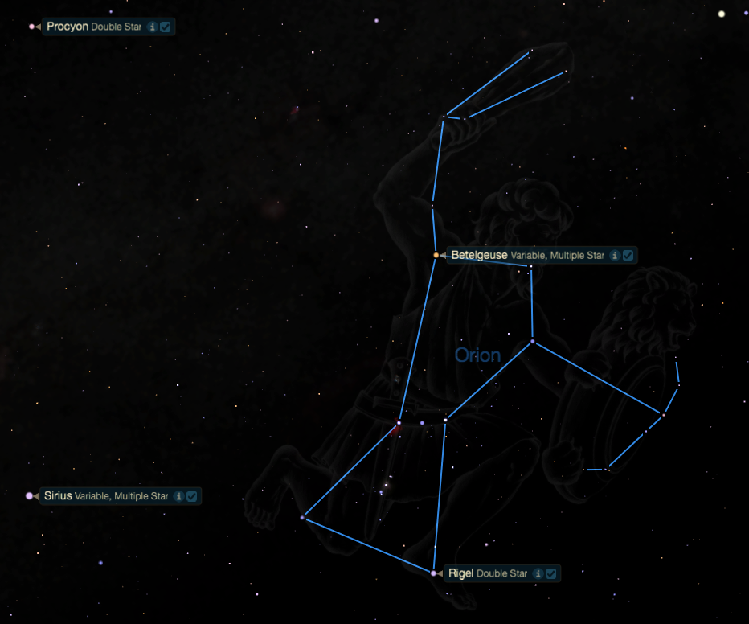

Rigel

On the western heel of Orion, the Hunter, rests brilliant Rigel. In myth, Rigel marks the spot where Scorpio, the Scorpion, stung Orion after a brief but fierce battle. Its Arabic name means the Foot.
Rigel is a multiple-star system. The brighter component, Rigel A, is a blue supergiant that shines a remarkable 40,000 times stronger than the Sun! Although it's 775 light-years distant, its light shines bright in our evening skies, at magnitude 0.12.
Rigel resides in the most impressive of the winter constellations, mighty Orion. After the Big Dipper, it's the most-recognized and easiest-to-identify constellation. It helps that the shape made by Orion's stars closely matches the shape of a human hunter: three bright stars are lined up together to form a belt, the other four stars surrounding the belt compose shoulders and legs.
Telescope observers should be able to resolve Rigel's companion, a fairly bright seventh-magnitude star. But the jewel in Orion is the Great Orion Nebula (M42), a vast stellar nursery where new stars are still being born. It can be found six moon-widths south of the belt stars. A heavy star of 17 solar masses, Rigel is likely to go out with a supernova-sized bang one day. Or it might become a rare oxygen-neon white dwarf.